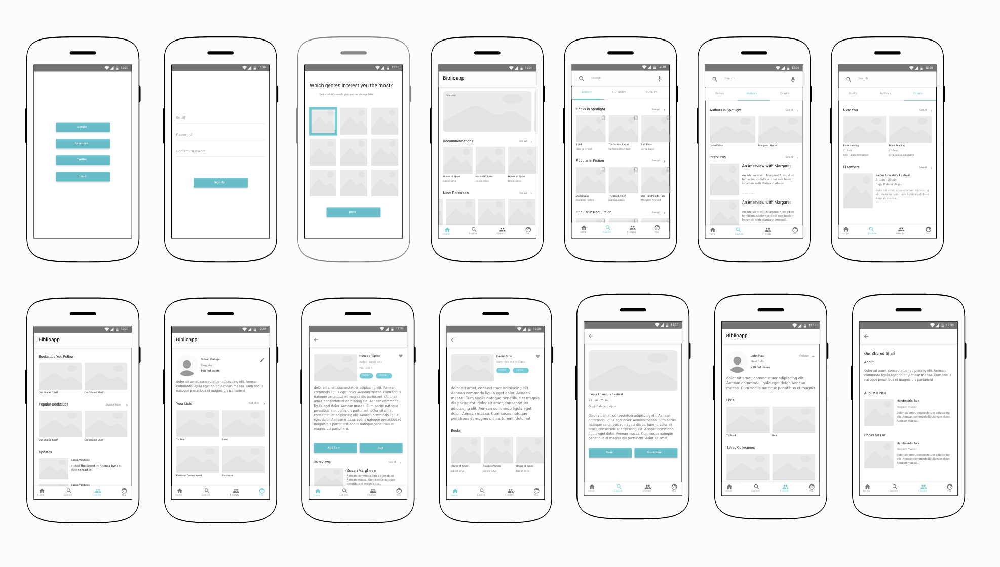

- Role UX Design
- Year 2017
- Team Personal
BiblioApp is an app that helps users get book recommendations based on their choice, stay up to date with the happenings in the literary world, about books, authors and events. This is a concept app which I undertook as a project while I was learning all about designing experiences.
Since this was the first project in user experience design, I kept the process simple and precise.
Let's start with the process.
1. Understanding
Ideation
- — Nurture reading habits amongst new users by recommending books based on their likes.
- — Connect readers together through book clubs.
- — Stay up-to-date with the happenings in the literary world, from book launches to events and news.
- — Adding the aspect of gamification through literary quizzes where users can challenge each other to show off their knowledge and earn “experience points”.
User Personas
The first step was to better understand the user needs. I set out to research further on the needs and pain points. The research group consisted of people of age group - 20 to 40; from various professions (students, teachers, artists, IT professionals). After this phase, the user personas were drawn out.

2. Planning/Analysis
Sitemap:
Before starting sketching and then moving on to wireframes, the app’s sitemap was laid out for more clarity.

Sketching:
Now let the sketching commence! 😄
Here is a snapshot of the wireframes.
After the first set of wireframes were created, I quickly created a click-through prototype using Adobe XD.
I incorporated user testing further throughout the process right after the minimum viable working prototype was ready. The feedback was invaluable and I could immediately understand the importance of user testing early on.
3. Designing
The wireframes were further improved based on the feedback received after user testing. I went forward with the android system font "Roboto". The primary color chosen was : #450AE4
Here is an overview of all that is there in the app —
Tab Bar consists of 4 options : Home, Explore, Community, Challenge.
Home Screen : Consists of featured lists, recommendations based on the choices selected previously, collections, latest news, an overview of events. It a rundown of
Explore : Consists of 3 tabs namely "Books", "Authors", "Events". Books have all the latest collections of books. Authors have news and interviews all related to authors. Events have all the rundown of events nearby and around the world.
Community : Consists of 2 tabs namely "Friends" and "Bookclub". Through Friends one can view all the updates from the people they are following and also find new friends to follow. Bookclub has everything related to book clubs, the ones you follow and it also gives new suggestions.
Challenge : Consists of 2 tabs namely "Challenge" and "Leaderboard". In Challenge you can view all the people who have challenged you in a quiz, you can view the results of past challenges and of course you can challenge your friends as well. Leaderboard shows the leaderboard scores amongst the people you follow.
App bar consists of options to "Search", access "Notifications" and view or edit your own "Profile". Profile showcases all your upcoming events, your reviews, collections etc.
Prototype
Here is the final interactive prototype, that will give you an in-depth look into the screens and the flow.
Scope of Improvement:
This is not perfect and there is always some scope of improvement. I would like to draw out intermediate states, empty states and some maybe corner cases which I might have skipped out during the process. Visual design not being my strong point, I know the visuals can be improved quite a lot from the current state 😊 If you, the one reading this, have any suggestions or feedback feel free to get in touch.
Starting from a blank paper to a prototype, it was a great learning experience and I am sure I am carrying forward tonnes of lessons which will help me create even better experiences in the future.